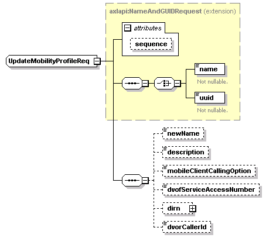

| diagram |
 |
| namespace |
http://www.cisco.com/AXL/API/10.5 |
| type |
extension of axlapi:NameAndGUIDRequest |
| properties |
| base | axlapi:NameAndGUIDRequest |
|
| children |
name uuid newName description mobileClientCallingOption dvofServiceAccessNumber dirn dvorCallerId |
| used by |
|
| attributes |
| Name | Type | Use | Default | Fixed | Annotation | | sequence | xsd:unsignedLong | optional | | | |
|
| source |
<xsd:complexType name="UpdateMobilityProfileReq">
<xsd:complexContent>
<xsd:extension base="axlapi:NameAndGUIDRequest">
<xsd:sequence>
<xsd:element name="newName" type="axlapi:String50" nillable="false" minOccurs="0" maxOccurs="1"/>
<xsd:element name="description" type="xsd:string" nillable="false" minOccurs="0" maxOccurs="1"/>
<xsd:element name="mobileClientCallingOption" type="axlapi:XDialViaOffice" default="Dial via Office Reverse" nillable="false" minOccurs="0" maxOccurs="1"/>
<xsd:element name="dvofServiceAccessNumber" type="xsd:string" nillable="false" minOccurs="0" maxOccurs="1"/>
<xsd:element name="dirn" type="axlapi:XDirn" minOccurs="0" maxOccurs="1"/>
<xsd:element name="dvorCallerId" type="xsd:string" nillable="true" minOccurs="0" maxOccurs="1"/>
</xsd:sequence>
</xsd:extension>
</xsd:complexContent>
</xsd:complexType> |